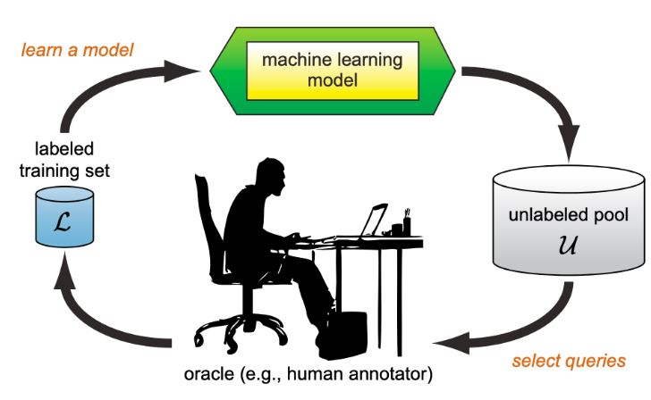
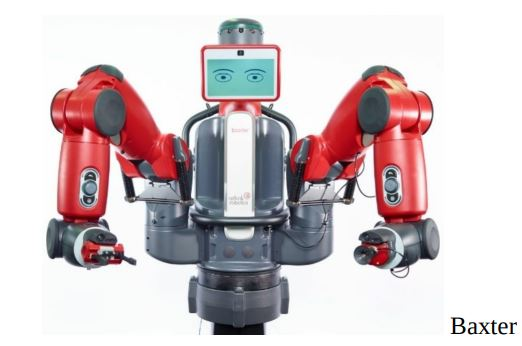

Algorithm#
Supervised Learning:
Algorithms that learn from labeled data to make predictions or decisions.
Unsupervised Learning:
Algorithms that identify patterns or groupings in unlabeled data.
Examples: K-Means Clustering
Semi-supervised Learning:
Algorithms that use both labeled and unlabeled data to identify patterns.
Supervised Learning#
Supervised learning is expensive, especially in terms of data labeling, as it requires large labeled datasets to train models effectively.
Labeling MRI scans is particularly expensive due to the need for expert radiologists to accurately annotate the images, which requires significant time and specialized knowledge
Amazing Note:#
Active learning is particularly valuable in contexts like labeling MRI scans because it can significantly reduce the amount of labeled data needed to achieve high model performance.
Why Active Learning is Useful#
Efficient Labeling:
Targeted Annotation: Active learning identifies the most informative samples for labeling, focusing expert resources on the most uncertain or representative cases. This reduces the total number of images that need to be labeled compared to randomly selecting samples.
Cost Reduction: By minimizing the amount of data requiring expert annotation, active learning lowers the overall cost associated with labeling, which is crucial in fields like medical imaging where expert time is expensive.
Improved Model Performance:
Increased Accuracy: Active learning helps improve model performance more effectively with fewer labeled examples by ensuring that the labeled data includes the most challenging and informative samples. This leads to better generalization and accuracy in the model. (Spam is not an informative sample)
Faster Model Training:
Efficient Learning: Active learning accelerates the training process by strategically selecting the most valuable data points, leading to faster convergence and reduced time for model development.

Example:
Credit Scoring#
Credit scoring is the process of determining how probably a person or organization is to repay a loan.
Feature Extraction: Input Vector:
Payment History:
Late Payments: Number of late payments, severity of lateness (30, 60, 90 days), and frequency of late payments.
Account Activity:
Transaction Volume: Frequency and volume of transactions on credit accounts.
Account Balances:
Total Debt
Debt-to-Income Ratio
Output:
Binary: Default, Non-default
Image classification#
Robots are one of the most used classification of images
Baxter is a collaborative robot (cobot) it suitable for tasks such as material handling, machine tending, and light assembly.
Rethink Robotics, was introduced in 2012. Baxter has a pair of cameras mounted in its head

Unsupervised Learning#
Unsupervised learning techniques are specifically used for tasks such as clustering and data reduction, which help in discovering patterns and simplifying datasets without relying on labeled data.
Text Clustering: News Aggregation#
Clustering in NLP involves grouping similar texts or documents together based on their content or features, without predefined labels. Group news articles into categories such as politics, sports, entertainment, and technology.
News API: A service that provides access to news articles from various sources and blogs.
Features: Allows you to search for news articles, get headlines from different sources, and filter by date, language, and more.
Website: News API
And other, such as,
ContextualWeb News API: Website: ContextualWeb News API
GNews API: Website: GNews API
Zero Price Data#
Unlabeled data, or data available at zero cost, presents a valuable opportunity in machine learning and data-driven applications for several reasons:
Benefits of Unlabeled Data#
Abundance (frequency) and Availability:
Large Volumes: Unlabeled data is often available in large quantities, such as images from the internet, user-generated content, sensor data, or logs.
Accessibility: It can be easily collected and stored at minimal or no cost, making it a rich resource for analysis.
Enhanced Model Training:
Semi-Supervised Learning: Combining a small amount of labeled data with a large amount of unlabeled data can improve model performance. Techniques like self-training, co-training, and pseudo-labeling leverage unlabeled data to boost accuracy.
Representation Learning: Unlabeled data is crucial for pre-training models, especially in unsupervised or self-supervised learning paradigms. This helps in learning useful feature representations before fine-tuning with labeled data.
Cost Efficiency:
Reduced Labeling Costs: Utilizing unlabeled data reduces the need for extensive and expensive labeling efforts. Active learning and other semi-supervised techniques make the most of the available labeled data.
Scalable Solutions: With the abundance of unlabeled data, scalable and automated solutions can be developed to process and utilize this data effectively.
Why We Crawl for Unlabeled Data#
Diverse and Rich Datasets:
Broad Coverage: Crawling the web or other sources for unlabeled data ensures a diverse and comprehensive dataset, which helps in training robust and generalizable models.
Real-World Applications: Accessing a wide variety of unlabeled data from different sources captures real-world variations and nuances, making the models more applicable in practical scenarios.
Continuous Learning and Updating:
Dynamic Data: Crawling allows for the continuous collection of fresh data, which is essential for updating models to adapt to new trends and patterns.
Adaptive Models: Regularly incorporating new unlabeled data helps in keeping the models up-to-date and relevant.
Web Crawler also known as a web spider or web bot, is an automated program designed to systematically browse the internet and collect data from websites.
Unlabel Data and some algorithms#
Generative Adversarial Networks
Autoencoders
Flow-based Models
Diffusion Models
Autoregressive Models
Transformer-based Models
Clustering based methos
Now, it’s time to discuss the example that used all types of algorithms, such as ChatGPT.
ChatGPT#
The rate at which it is being utilized is so fast that it feels completely outdated.
ChatGPT The product of the well-known company OpenAI is based on Language Models. It understands the linguistic structure of a language and allows computers to work intelligently with that language. OpenAI began operations in 2015 and introduced its first research work in 2016 under the title Generative Pre-trained Transformer (GPT). ChatGPT is built on GPT-3, the third version of this tool, which has 175 billion parameters. Here are the headlines with years added for a clearer timeline:
OpenAI’s Language Model Technology (Since 2015)
OpenAI Introduces GPT (Generative Pre-trained Transformer): First Research Work (2016)
ChatGPT Built on GPT-3 with 175 Billion Parameters (2020)
ChatGPT supports a significant number of languages (English, Spanish, French, German, Chinese, Japanese, Korean, Italian, Portuguese, Dutch, Russian, Arabic, Turkish, Swedish, Danish, Norwegian, Finnish, Polish, Hungarian, Greek, Czech, Romanian, Hebrew, Thai)
Some of OpenAI’s products:
DALL-E: The ability to generate images from text.
Codex: Code generation in response to natural language (6 billion parameters and 800 million lines of code).
ChatGPT has various capabilities in working with texts, including the following well-known areas:
Language Assistant: Tasks ranging from grammar and style checking, writing suggestions, to language translation.
Knowledge Acquisition: Answering questions on various topics, recent and historical events, scientific discoveries, and more.
Personalized Recommendations: Providing services and entertainment based on user analysis.
Chatbot and Virtual Assistant: Offering support and customer interaction.
Sentiment Analysis: Determining sentiment and detecting biases based on social media and online content.
Voice Assistant: Enabling device control and voice responses by integrating with voice assistants (understanding spoken language).
Education: Acting as a personal tutor, answering questions, and providing feedback on students’ texts.
ChatGPT has been trained on a vast amount of data that includes various types of text, such as reviews, articles, posts, and chats. Importantly, among these texts, there are also different programming languages. Additionally, it encompasses website content, literature sources, poems, jokes, and scientific resources.
ChatGPT offers various features, including:
Conversations
Humor
Poetry
Code writing with debugging and explanations
Story telling
Resume creation
Understanding and maintaining long-term conversations
Generating scientific content across different fields
Translating between multiple languages
Various text-based applications